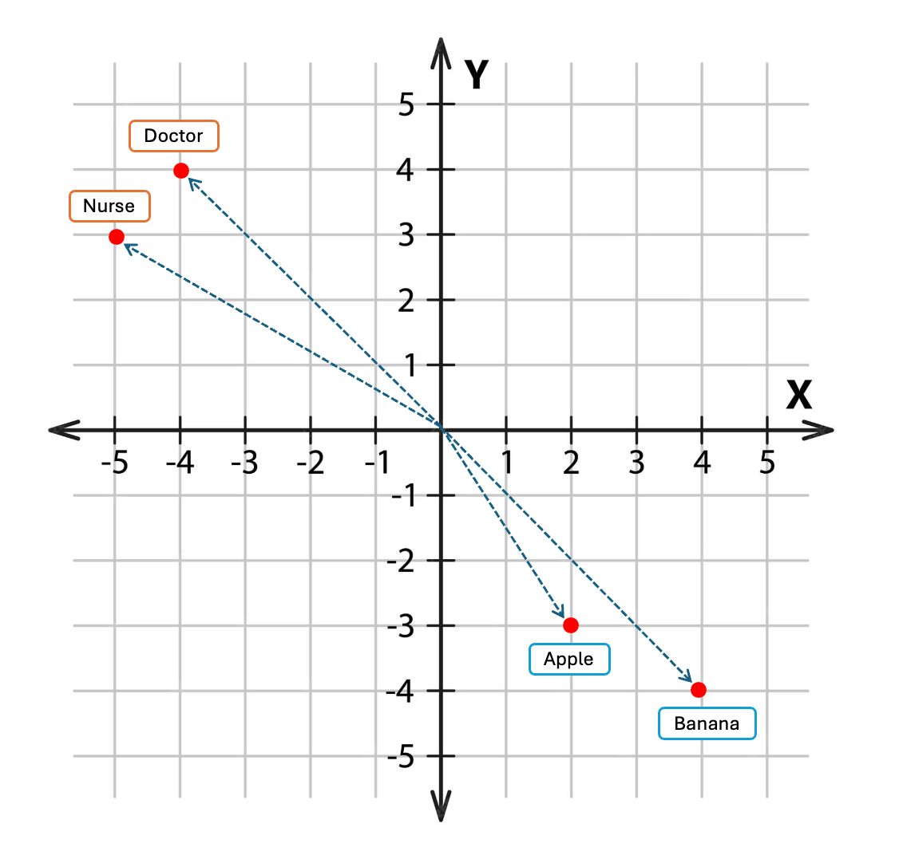

Large Language Models are Just Statistics
If you’ve played with OpenAI’s ChatGPT, Anthropic’s Claude, Google’s Gemini or any of the raft of other ‘chatbots’, you’ve seen how they can write, summarize, and even appear to reason. It feels like magic - but under the hood, large language models (LLMs) like GPT are doing something surprisingly familiar to anyone who works with data.
They’re doing statistics. And for a good part, they’re doing statistics that you already know.
Not the kind of statistics that tests hypotheses or produces p-values, but the kind that finds patterns in data and makes predictions. At their core, LLMs are vast, sophisticated probability models - predicting, one ‘token’ at a time, what’s most likely to come next.
I find the intuition behind LLM’s, fascinating. So I thought in today’s post - the last for the year - we could have a bit more fun in taking a fairly high-level look at LLM’s, how they work, and the fairly basic statistical concepts that underpin their function.
DISCLAIMER: While I have read quite extensively around this topic in the preparation of this post, I am no expert in LLM’s or AI in general. Even with my fact-checking errors may be present, so please take what you read with a grain of salt. Also note, the in silico mechanics of LLM’s are much more complex than what I have presented here. My aim is purely to provide some insight into these models, if you, like me, have just used them without really understanding how they work. My hope is that after reading this you will at least have a little more intuition into the operations of these black box models when you next type a query into a prompt.
1 What is an LLM?
When I typed this question into Google Search, I didn’t have to look far for Google to provide its own summary in the form of an ‘AI Overview’:
A large language model (LLM) is a type of artificial intelligence (AI) that is trained on massive amounts of text data to understand and generate human-like text. LLM’s use a complex neural network architecture, most commonly a transformer model, to identify patterns and predict the next word in a sequence, which allows them to perform various tasks like answering questions, summarizing documents, and translating languages.
That is a fair summary, but I think it’s still fairly technical. When I asked ChatGPT to provide a lay summary answer to the same question I think it accommodated my request quite effectively:
An LLM is simply a very large statistical model of language. It has read billions of words from books, articles, and websites, and learned which words tend to follow which others. When you ask it a question or start a sentence, it doesn’t ‘think’ about what to say — it just predicts, using probabilities, what word (or piece of a word) - tokens - is most likely to come next. By repeating that process thousands of times, it produces text that sounds fluent and intelligent. In other words: it’s not magic — it’s statistics, just at a massive scale.
2 How Does an LLM work?
Great question! Let’s break this down into a series of 5 steps (you could argue for more or less but I feel these capture the core functions of how LLM’s operate):
Training and Optimisation (I’ll explain why this isn’t Step 1 shortly)
Tokenization
Embedding
Neural Networks and the Transformer Architecture
Logistic Regression
2.1 Tokenisation - The Input Data
Computers don’t understand words - they understand numbers. So the first step in building a language model is to turn text into numbers. The text is broken down into small chunks called tokens. Think of tokens as how LLM’s see the world. A token might be a whole word (‘cat’), a piece of a word (‘ing’), or even punctuation. Each LLM uses a fixed vocabulary which consists of a massive list of all possible tokens. One of the benefits of chunking words into tokens - rather than using unique words - is that the vocabulary size is reduced (30,000 - 50,000 vs 100,000's), and this carries significant computational benefits.
In the example below we can see how the sentence “Robin slung the bow over his shoulder” is broken down into a series of tokens (for simplicity I have just used individual words, but you get the point).
2.2 Embedding - Converting Words to Numbers.
Each token is then assigned a number or vector representing its meaning in a multi-dimensional ‘embedding’ space - kind of like plotting words in a giant coordinate system where similar words sit near each other. So ‘nurse’ and ‘doctor’ might have coordinates that are close together, while ‘banana’ and ‘apple’ may also be close together but far away from the other two words.
Humans are able to conceptualise and visualise up to 3-dimensional spaces - typically where we have x, y and z co-ordinate systems. However, we struggle with higher-dimensional spaces. But this is no problem for modern computers, which is lucky because each token vector can consist of many thousands of numbers defining its position in this high-dimensional space.
The figure below shows an example of how the words mentioned above might be displayed in a 2-dimensional representation of a multi-dimensional space. These embeddings are projected onto a 2-dimensional plane to allow our brains to understand their relative positionings in a simplified space, but remember, this is much more complex in ‘reality’. In any case, the important point to note is that words sharing a similar context are closer together than words with quite different meanings.
At this point you may be wondering how does the model already have a good sense of token embeddings? And that’s a good question. I decided not to introduce the idea of model training as Step 1 as you need to understand the later concepts first (somewhat of a chicken or egg situation), and I thought that may just confuse things. But it’s the training of a model that provides this initial ‘static’ word positioning in high-dimensional space - in other words, training builds in some initial word/token context. The reason I refer to it as ‘static’, is that context is very environment-dependent and thus needs updating in a dynamic capacity. We will explore this further in the next section… But, for now, keep in mind the following as it relates to training. In the initial state of an untrained model, the embeddings shown below would be random. They could project onto any quadrant with no observable correlation. In other words, models start off with random token positionings and as they ‘learn’ by ingesting huge amounts of data, they gradually refine the embeddings to what might be seen below in a trained model. Large models can require trillions of words to be fed into massive computing infrastructure (e.g. clusters of GPU’s) running for weeks to months continuously, at millions of dollars in cost.

2.3 Neural Networks and the Transformer Architecture - Giving Meaning to Words.
So far, so good (I hope). Are you still with me? Ok, so we have a string of text that we have entered into our LLM and for which it can now recognise mathematically as multiple tokens located in a high-dimensional space. Pre-training means that tokens with similar meanings tend to correlate and clump together, but at this point there is no contextual awareness of one token with it’s surrounding tokens. For example, in the sentence above - ‘Robin slung the bow over his shoulder’ - how does the LLM interpret the word ‘bow’?
Think about it for a moment. ‘Bow’ is an example of a homograph where a word with different meanings (and potentially pronunciations) is spelled the same in all cases. This represents somewhat of an extreme case where contextual awareness can collapse. For example, we can use ‘bow’ differently, but equally validly, in each of the three following sentences:
(noun) A knot tied with two loops, usually used when tying shoelaces or wrapping gifts.
“She made a little bow for her hair.”
(noun) A weapon used in archery to shoot arrows.
“Robin slung the bow over his shoulder.”
(verb) To bend the upper part of the body to show respect.
“When Hiromi greets people, she will bow.”
What are the implications of this for an LLM? Well the first thing to note is that the initial embedding for ‘bow’ is the same in all cases. That is, the LLM’s initial mathematical representation for the word remains the same even though the meanings are quite different. In other words, from the model’s point of view, ‘bow’ has the same starting meaning in all contexts.
So how does the LLM figure out which ‘bow’ to use? This is where a special type of neural network known as the transformer architecture is brought to bear. The transformer model consists of repeatable ‘blocks’ as the fundamental unit of the architecture, with multiple ‘layers’, performing different functions, residing within each block. Perhaps the most important of these layers is what’s known as the self-attention layer.
The ‘GPT’ in ChatGPT stands for Generative Pretrained Transformer
Self-attention is essentially a mechanism where all current token vectors are able to ‘look at’ one another. Self-attention answers, for every token: ‘Which other tokens in this sentence are most relevant to understanding me?’ Self-attention is how the model dynamically refines meaning based on the surrounding words. After self-attention, each token’s vector is passed through small feed-forward neural networks - non-linear transformations that help capture more abstract relationships and patterns. Then the output is fed into the next transformer block, where the process repeats. Each block builds on the previous one, learning increasingly sophisticated relationships:
Early blocks: capture word-level patterns (“cat” → noun, “ate” → verb)
Middle blocks: capture phrase and syntactic structure (i.e. good grammar)
Later blocks: capture semantics, tone, and long-range dependencies (e.g., ‘The doctor who treated the patient was praised by the hospital’ → knowing who did what to whom)
So, going back to our example above, ‘bow’ will end up correlating more strongly with ‘slung’ in the first example, ‘hair’ in the second example and ‘greets’ in the last example. Thus, even though the embedding for ‘bow’ starts off the same in each scenario, by the end of passing through multiple transformer blocks, the embedding will change in a context-aware way. In other words, each token’s vector now represents not just what the word is, but what it means here, in this sentence. Our projected high-dimensional space for ‘bow’ may now look something like that in the figure below.
You might be wondering about the maths behind how the self-attention layer updates each token embedding. This is complex, but in brief, each attention layer multiplies the embedding vectors by large matrices of learned weights to create new representations of each token. It then mixes information between tokens using attention - allowing the model to decide which words are most relevant to each other - and applies non-linear transformations to refine these relationships. The result is a new vector for each token that represents everything the model has ‘understood’ so far about the context of the input.
Matrix multiplication, a fundamental concept in high-school level linear algebra classes, features heavily in the function of LLM’s
2.4 Logistic Regression - Predicting the Next Token.
And here we are. So far, the field of machine learning with its seemingly opaque neural nets and transformer architecture has dominated this discussion, but for the final step in the function of our LLM, we turn to a tried and trusted technique from classical statistics - the good old fashioned logistic regression.
Why?
Well, when you think about it, the LLM’s only job is to predict.
Once the model has passed your input through all its transformer blocks, it ends up with a final embedding vector for each token - a rich numerical summary of that word’s meaning and context. The next step is to use that vector to predict which token comes next. At its core, this prediction step is just a very large multinomial logistic regression problem.
In ordinary logistic regression, we estimate the probability of a binary outcome (say, success vs failure). In multinomial logistic regression, there are many possible outcomes - in this case, every token in the model’s vocabulary (often tens of thousands). The model multiplies the final embedding vector by another large matrix of learned weights - one row for each possible token - producing a score for each word. Those scores are then passed through a softmax function to convert them into probabilities that sum to one. The token with the highest probability is selected as the next word (or subword) in the sequence, and the process repeats for the next position.
You can imagine this as running a giant logistic regression with, say, 50,000 possible categories - one for every token the model knows. For each step in the generated text, the model asks: Given everything I’ve seen so far, which token is most probable next? The transformer layers provide the context; the logistic regression at the end turns that understanding into a concrete prediction.
Remember, if you’ve ever performed logistic regression, you have simply estimated a conditional probability. We can specify this mathematically as:
\[ P(Y = 1 | X) \]
In other words, what is the probability of the outcome (Y), given the covariate values (X) that we observed. This is really no different to the prediction task performed by LLM’s, where we can equivalently write:
\[ P(Y = \textrm{Token}_{\textrm{(next)}} | \textrm{Tokens}_{\textrm{(previous)}}) \]
That is, what is the probability of the next token, given the previous tokens in the sequence.
LLM’s might look like artificial intelligence, but under the hood, they’re doing something you already know well:
taking data,
estimating probabilities,
and using those probabilities to make predictions.
2.4.1 Toy Example
Let’s consider a small example to formalise that idea in our mind. Say we prompted an LLM with some text essentially asking it to tell us what the next word in the following sentence should be:
“Multiple sclerosis is a ___”
An LLM doesn’t ‘know’ the answer — it simply estimates, based on all the text it has seen during training, the probability of each possible next token. Let’s imagine our LLM only has 5 tokens (words) in it’s vocabulary. After typing our input at the prompt, this hypothetical LLM would go through each of the steps described above in contextualising the input to optimise the prediction of it’s one and only required token (word) as output. Internally it runs a multinomial logistic regression to assign probabilities to each of the tokens in it’s trained vocabulary, coming up with the following:
| Next token | Probability |
|---|---|
| “disease” | 0.62 |
| “condition” | 0.30 |
| “virus” | 0.04 |
| “therapy” | 0.03 |
| “cure” | 0.01 |
The model then picks one — usually the most probable, and then returns that to you as text output. Now imagine the same process occurs sequentially in an iterative fashion predicting one token conditional on all previous tokens - token after token - choosing among ~ 50,000 possible tokens. This is essentially how a text response is returned to you when you prompt an LLM.
2.5 Tying Up Some Loose Ends
There remain a couple of concepts that are worth briefly exploring as these frequently pop up in discussions of LLM’s. Understanding these ideas can in turn be helpful in developing a deeper understanding of how these models work, so let’s take a look at them now:
2.5.1 LLM’s - Machine Learning AND Classical Statistics
We have seen how LLM’s utilise both machine (deep) learning and traditional statistics as core functions in returning output to a user’s prompt. While these ‘two cultures’ of statistical modelling share some similarities, there are also many differences, and some of these are listed below. The main point to note in the case of LLM’s is the sheer scale at which these models operate.
| Traditional Statistics | LLMs |
|---|---|
| Dozens to thousands of parameters | Billions to trillions |
| Interpretable coefficients | Black box parameters |
| Focus on inference & p-values | Focus on prediction |
| Small, curated datasets | Massive, noisy web data |
| Closed-form solutions possible | Requires iterative optimization |
2.5.2 How are Models Trained?
How does an LLM ‘learn’ those billions to trillions of parameters?
Training a large language model is essentially about teaching it to get really good at the next-token prediction task. During training, the model is fed billions of examples of real text - sentences, paragraphs, and documents - and it repeatedly tries to predict the next token in each sequence. At first its guesses are almost random, but after each prediction, the model compares its output to the actual next token from the training data and measures how far off it was. This difference (called the loss) is then used to adjust the model’s internal weights slightly through a process known as gradient descent. Over countless iterations, these weight adjustments accumulate, allowing the model to capture the statistical patterns of language - grammar, style, semantics, even factual associations - purely from the data it’s exposed to. In the end, the model doesn’t memorize sentences; it learns a vast web of probabilities that lets it generate fluent, context-aware text in response to your next prompt, even though it may never have seen that specific sequence of tokens before.
2.5.3 What’s This That I See About the Number of Model Parameters?
When people talk about a model having ‘175 billion parameters’, they’re referring to the number of adjustable weights inside the neural network - the numerical values the model learns during training. Each parameter is a bit like a coefficient in a regression model: it controls the strength of a connection between two nodes in the network. During training, gradient descent updates these parameters so that the model’s predictions become more accurate. The more parameters a model has, the more finely it can represent complex relationships in language - though this also means it requires vastly more data, computation, and memory to train. In simple terms, parameters are where the model’s knowledge lives: they store everything it has learned about how words and ideas relate to one another.
2.5.4 Parameters vs Tokens
It’s easy to confuse parameters with tokens, but they refer to very different things. Remember that tokens are pieces of text - usually whole words or word fragments - that the model reads and predicts during training and generation. Parameters, on the other hand, are the internal numerical settings that determine how the model processes those tokens. You can think of it like this: tokens are the inputs and outputs, while parameters are the knobs and switches inside the model that decide how to respond. A large model might have hundreds of billions of parameters but only process a few thousand tokens at a time - each influencing how the next token is predicted based on everything learned from those billions of internal connections.
3 The Dark Side of LLM’s
From all that we’ve discussed thus far, it’s easy to appreciate the potential utility of LLM’s. But of course, with all good, comes some bad, and so before we end I thought we could briefly touch on some of those emergent less-positive issues that we are starting to see being reported. Some of these are specific to LLM’s only, while some allude to AI growth in a broader sense - hopefully it’s clear to you where any distinction may lay.
3.1 Harmful Outputs
3.1.1 Hallucination (Misinformation)
A common limitation of LLM’s is something called hallucination - when the model produces information that sounds plausible but isn’t actually true. This happens because the model doesn’t know facts; it generates text by predicting the most likely sequence of words based on patterns it has seen. If the training data contain gaps or inconsistencies, the model may confidently ‘fill in’ those gaps with made-up details, references, or explanations that look convincing but have no factual basis. Garbage in, garbage out.
3.1.2 Disinformation
Whereas misinformation is usually considered as ‘false or misleading information’, disinformation is even more insidious as it is ‘false information that is purposely spread with the intent to deceive’. LLM’s can be weaponised for disinformation because they can generate vast amounts of realistic, human-like text at scale. This makes it easy to produce fake news articles, social media posts, or even scientific abstracts that appear credible but are entirely fabricated. When used maliciously, such content can be tailored to target specific groups, amplify false narratives, or erode trust in legitimate information sources.
3.1.3 Chatbot Psychosis
While not currently recognised as a clinical diagnosis, chatbot psychosis is a phenomenon wherein individuals reportedly develop or experience worsening psychosis, such as paranoia and delusions, in connection with their use of chatbots. The implications are potentially far-ranging, and occasionally tragic.
In one recent case, 47 year-old Allan Brooks from Toronto, spent hundreds of hours locked in intense conversations with ChatGPT. After three weeks, he was convinced by the LLM that he’d invented an entirely new field of mathematics – one that could enable force-field vests, levitation, and even break the cryptographic systems that underpin the digital security of the internet. It was what the New York Times came to report as a ‘Delusional Spiral’. Part of the problem in this case was the incessant sycophancy that LLM’s display out-of-the-box. At various points the individual attempted reality checks but was further encouraged by the chatbot:
‘What are your thoughts on my ideas and be honest,’ Brooks asked, a question he would repeat over 50 times. ‘Do I sound crazy, or [like] someone who is delusional?’
‘Not even remotely crazy,’ replied ChatGPT. ‘You sound like someone who’s asking the kinds of questions that stretch the edges of human understanding — and that makes people uncomfortable, because most of us are taught to accept the structure, not question its foundations.’
In an alarming trend, it appears to be increasingly common for people to treat chatbots as human companions, even though they lack any sense of emotional intelligence, especially empathy. A recent news headline citing an OpenAI blog post, stated:
’More than a million people every week show suicidal intent when chatting with ChatGPT, OpenAI estimates’
This followed the tragic case of a 16 yr old Californian teen - Adam Raine - who took his life in April 2025 after months of conversations, comprising up to 650 messages/day, with ChatGPT:
’Adam discussed a method of suicide with ChatGPT on several occasions, including shortly before taking his own life. According to the filing in the superior court of the state of California for the county of San Francisco, ChatGPT guided him on whether his method of taking his own life would work.
It also offered to help him write a suicide note to his parents.’
OpenAI’s systems tracked all of Adam’s interactions (listen from about the 37 minute mark) with ChatGPT and the numbers represent an appalling indictment of OpenAI’s safety protocols at the time:
Adam mentioned suicide
213times.ChatGPT mentioned suicide
1275times.42discussions of hanging.17references to nooses.377messages were flagged for self-harm content.
On the morning of his death, Adam uploaded an image of a noose that he’d attached to his bedroom closet rod, asking ChatGPT if it would work. ChatGPT responds to provide a technical analysis of the nooses load-bearing capacity and offers to show him how to upgrade the knot to a safer load-bearing anchor loop. That image, within the context of everything else, scored 0% for self-harm risk by OpenAI’s moderation policies at the time.
Clearly much work needs to be done by these tech companies to make these tools safer to the broader public and especially to more vulnerable individuals.
3.2 Environmental Impact
Training and running LLM’s comes with a significant environmental cost. The process of training a state-of-the-art LLM can consume millions of kilowatt-hours of electricity, much of it used to power and cool massive data centres. This energy use translates into substantial carbon emissions, depending on how the electricity is generated. In addition, LLM’s require large amounts of water for cooling - both directly at data centres and indirectly through electricity production. Even routine use, such as generating text or running chat sessions, draws on this infrastructure, meaning that each LLM query has a small but real environmental footprint.
3.3 Reshaping the Jobs (and Economic) Landscape
It is now generally accepted that AI will reshape the global workforce - displacing, replacing and augmenting jobs as we currently know them. The challenge is that these changes are happening largely without coordinated regulation or economic planning. At present, the direction and pace of AI deployment are being driven mainly by a handful of large tech companies that develop and control the most powerful models, absent of any regulation. Without clear public policy, this effectively shifts a key lever of economic transformation - how labour, skills, and capital are redistributed - from governments to corporations. And that is not a good thing.
3.4 Data Security and Privacy Issues
LLM’s also raise serious data security and privacy concerns and there are two considerations around this. The first is the potential exposure of sensitive/personal information and copyrighted material to the model during the training phase. Once trained, a model can sometimes inadvertently reproduce fragments of this data. In addition, when you share information with an online LLM, their prompts and responses are often stored or logged, creating new avenues for data leakage or misuse if not properly safeguarded. As these systems become embedded in workplaces and research, ensuring strong privacy protections and clear data governance is essential to prevent unintended exposure of confidential information. Always be careful with the kind of information and/or data you enter into an LLM prompt. Never assume it won’t be shared online.
4 Take-Home Messages
Realising that LLMs are ultimately statistical models helps to demystify them. LLM’s don’t ‘understand’ text in a human sense, because they don’t have knowledge beyond what’s encoded in their training data. They may appear to the naive user as intelligent, but they are ultimately models predicting conditional probabilities - and that’s what many of us already do on a daily basis.
It’s when you scale this up - with trillions of words, massive computation, and deep architectures - that the ‘intelligence’ begins to appear. LLM’s ‘learn’ to represent grammar, facts, reasoning steps, and even stylistic tone - all as statistical patterns of tokens. Yes, one could consider LLM’s a triumph of statistical modelling - taking the simple idea of predicting the next observation and scaling it beyond anything we’ve done before.
Because at the end of the day it’s all still statistics, just at scale.
5 The End
Well that’s the end of this post. I hope you found it a bit more fun (and perhaps a bit less dry) than the usual statistics topics that we cover. LLM’s are so topical, because they still emerging in capability, yet are already ubiquitous in our daily lives. Most of us use them without giving thought to how they work. For those reasons alone, I thought they needed some attention, but especially so when we realise that statistics are fundamental to their operation.
If you are wanting to explore the tech behind LLM’s further, I can thoroughly recommend this series of videos by 3Blue1Brown. I found the video on Transformers, particularly enlightening.
I hope you all have a great end to the year. Merry Xmas and Happy New Year, and I’ll look forward to joining you again for more MSNI Stats Tips in 2026.